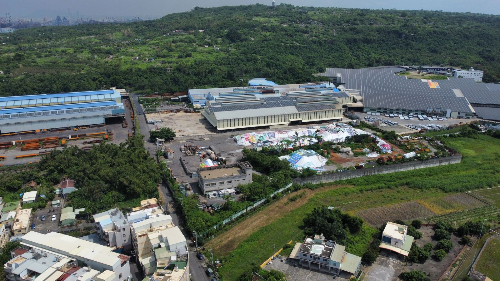
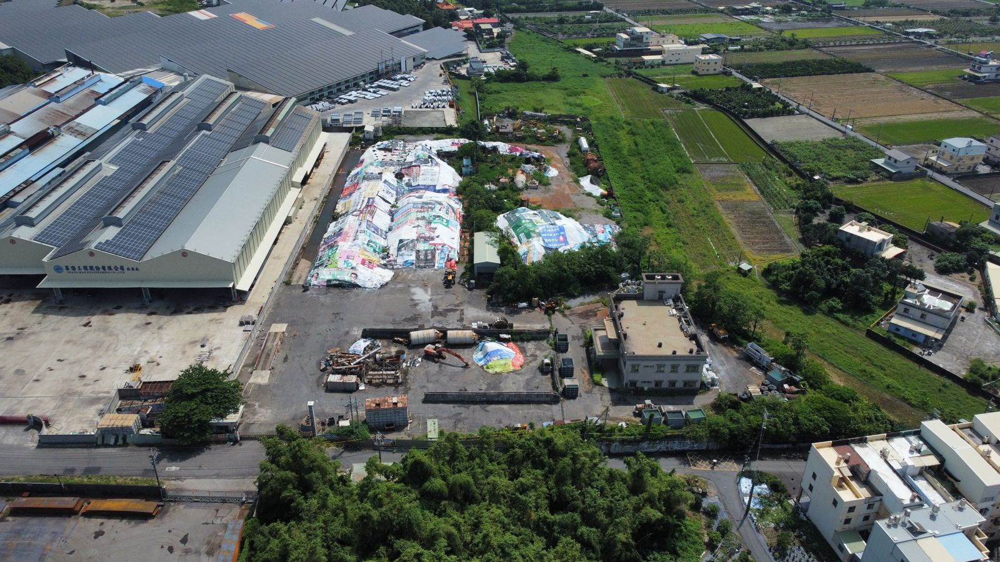
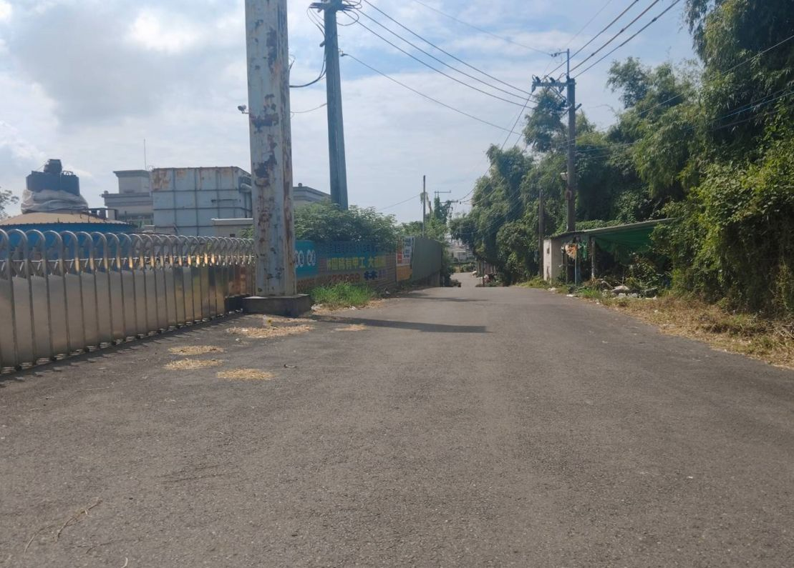

| 類別 | 大型廠房 |
|---|---|
| 編號 | IND-009 |
| 區域 | 高雄市林園區清水岩路 |
| 價格 | 總價147770萬 |
| 使用分區 | 甲工/道路用地/綠帶 |
| 土地坪數 | 7256 |
| 建物坪數 | 289 |
| 備註 | 面寬170米、深度198米、臨路林家路(約8米)；計畫道路16米；一層141.85坪、二層140.46坪、守衛室5.44坪、屋突7.41坪；附屬建物-陽台2.57坪、雨遮10.74坪 |
洽詢：楊紘珉（富住通商用不動產 新興店）0905-858-141｜LINE 諮詢